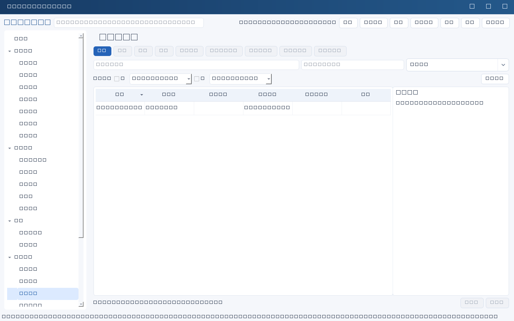
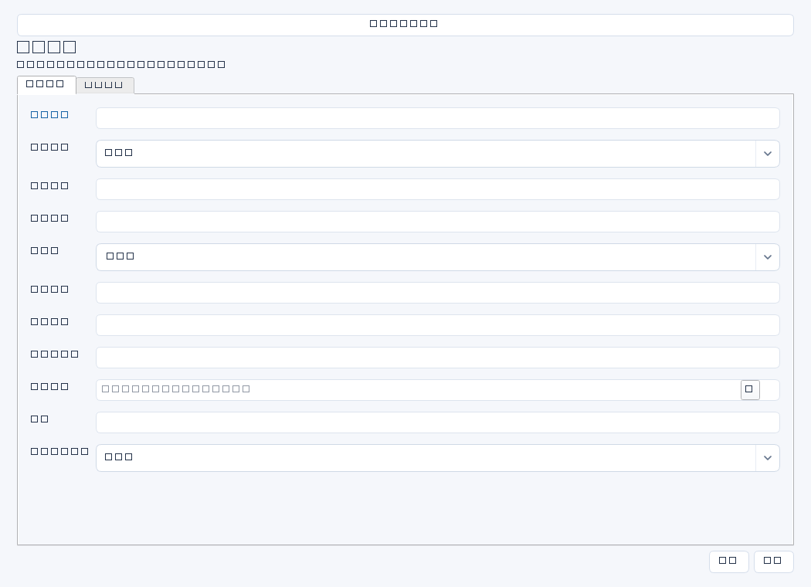

记录对真实业务系统账号的权限复核，检查责任归属、必要性、审批依据、MFA和整改。此处不操作目标系统账号，也不是本工具的登录人员管理。


操作步骤与资料获取
- 请目标系统管理员导出时点明确的账号、角色、权限和MFA配置，结合HR变动名单及审批记录确认范围。
- 新增复核项并选择系统，填写账号标识、类型、责任人与权限摘要；不要记录密码、令牌或恢复码。
- 逐项核对最小权限、共享账号责任、服务账号用途和审批有效性；将证据编号写入审批依据，记录真实复核日期及结论。
- 发现问题时另建整改任务，完成后选择整改任务ID；到目标系统执行实际调整并重新导出验证，不能只在本表写“已撤销”。
字段逐项说明
| 操作 / 字段 | 详细说明 |
|---|---|
| 名称 | 复核标题，强制非空；建议系统＋账号＋周期。 |
| 系统ID | 被复核系统；非空时强制引用有效systems记录，建议填写以避免账号同名歧义。 |
| 账号标识 | 目标系统用户名、邮箱或服务账号名；仅标识，不填口令或密钥。 |
| 账号类型 | 自由文本，如个人、管理员、接口服务或共享账号；明确使用场景。 |
| 责任人 | 解释用途并承担定期复核责任的人名；服务账号也建议明确自然人责任。 |
| 权限摘要 | 列实际角色、管理范围及高权限操作，不仅写“有权限”；来源应为系统导出或配置核验。 |
| 审批依据 | 记录授权工单、审批单、有效期及证据位置；文本填写不会完成在线审批。 |
| MFA状态 | 自由文本，写已启用、未启用、不支持或待核实，并注明核验来源；没有自动检测。 |
| 复核日期 | 实际完成核验的日期；非空时强制YYYY-MM-DD。 |
| 结论 | 写保留、降权、停用、补审批等及理由；自由文本，没有强制完成门槛。 |
| 整改任务ID | 可选跟踪任务；非空时强制引用有效tasks记录；不会因填写结论自动建立任务。 |


示例（仅演示）
| 操作 / 字段 | 详细说明 |
|---|---|
| 名称 | ERP接口账号svc_wms—2026Q2复核 |
| 系统ID | |
| 账号标识 | svc_wms |
| 账号类型 | 接口服务账号 |
| 责任人 | 陈晨 |
| 权限摘要 | 当前含接口读写及不必要的角色维护权限 |
| 审批依据 | 授权工单AC-2024018；20260401权限导出存受控资料库/权限 |
| MFA状态 | 非交互服务账号，不适用交互MFA；需核查凭证轮换控制 |
| 复核日期 | 2026-04-06 |
| 结论 | 建议移除角色维护权限，接口读写保留；实施后重新导出比对 |
| 整改任务ID |
形成闭环
- 核对整改前后权限差异与业务回归结果，再更新结论，写明实际生效日期和验证材料位置。
- 无须整改时也应写保留理由、适用范围和下次复核建议。
- 整改任务的完成状态不会自动修改本记录结论，需人工复核更新。
常见误区与边界
- 填写账号标识即认为本工具能够登录或停用该账号。
- 将“不适用MFA”与“无须其他控制”等同，忽略服务账号凭证轮换和访问边界。
- 只核对审批单而不核对实际权限，遗漏历史叠加授权。